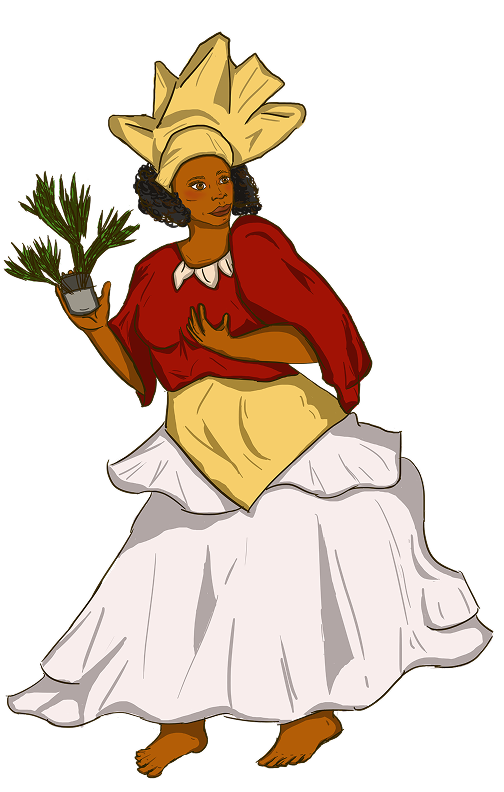
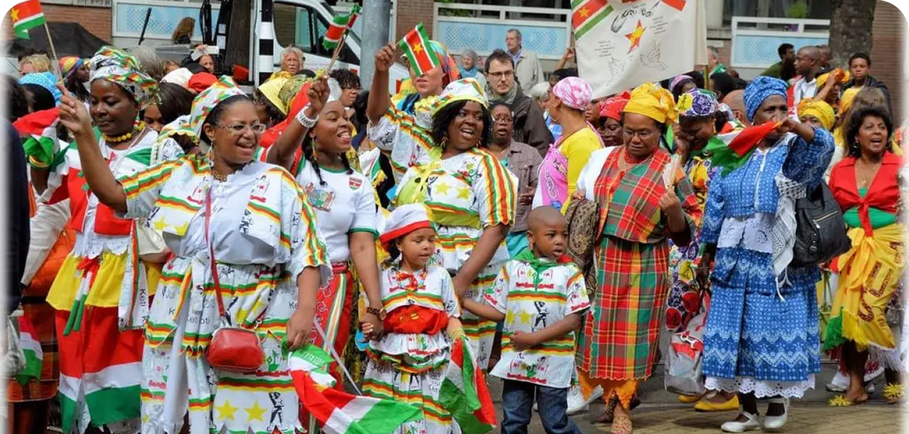
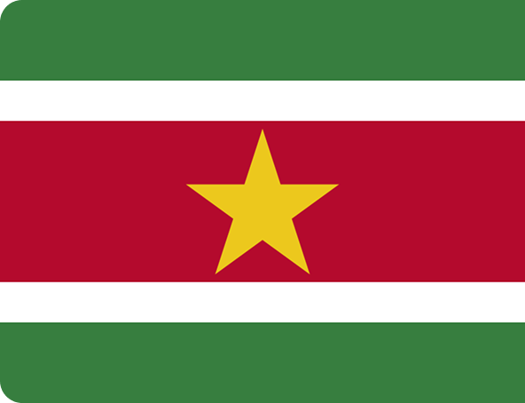
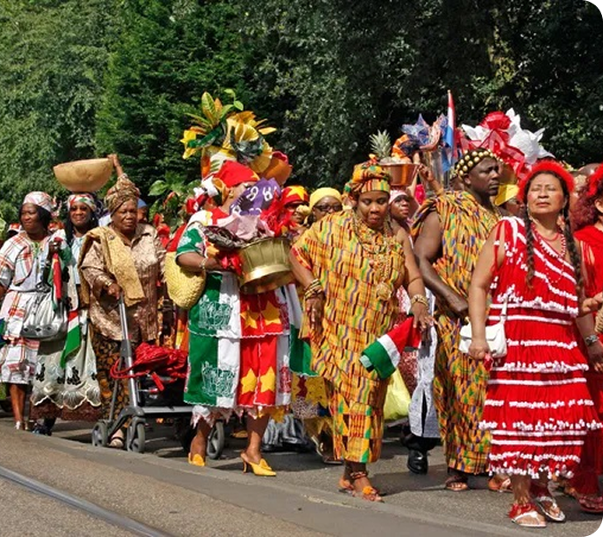

SURINAME
Keti Koti
Kotomisi

A Kotomisi é a denominação dada à mulher que veste a koto, traje tradicional feminino afro-surinamês. Mais do que uma roupa, ela representa identidade cultural, história colonial e formas de comunicação simbólica através da vestimenta.
A figura da kotomisi surge no contexto da formação colonial de Suriname, especialmente entre os séculos XVII e XIX, durante o período da escravidão. A vestimenta está ligada às mulheres afro-surinamesas escravizadas e posteriormente libertas, sendo resultado de processos culturais complexos envolvendo Europa, África e América.
A vestimenta da Kotomisi é um dos principais símbolos culturais do Suriname, composta por uma saia volumosa, blusa ajustada e o tradicional lenço de cabeça chamado angisa. Feito com tecidos coloridos e estampados, o traje cria uma aparência marcante que reflete a identidade e a herança afro-surinamesa.
Mais do que uma roupa, a Kotomisi funciona como uma forma de comunicação cultural. As dobras do angisa, as combinações de tecidos e os detalhes do traje podem transmitir mensagens, emoções, status social ou ocasiões específicas, transformando a vestimenta em uma linguagem visual carregada de significado e memória ancestral.
A forma de vestir não é apenas estética: cada dobra, volume e combinação pode indicar status social, humor, ocasião ou mensagem pessoal, tornando a kotomisi uma linguagem visual própria.

Celebrado no 1o de julho em Santo Eustáquio e em São Martinho, essa data marca a abolição da escravidão. O termo "Keti Koti” vem do idioma sranantongo, que significa “correntes quebradas”. Nessa data ocorre o desfile Bigi Spikri (“Grande Espelho”), em que pessoas vestem trajes tradicionais e desfilam pelas ruas. O evento é um momento de reflexão sobre a resistência contra o colonialismo dos Países Baixos. Nessa festividade, as mulheres usam o “kotomisi” e o “angisa”, que faziam parte das vestimentas das mulheres escravizadas daquela época. Elas dobravam seus lenços de formas específicas como meio de comunicação entre elas.

O Suriname é um dos países mais diversos linguisticamente da América do Sul. O neerlandês é a língua oficial, mas idiomas como sranantongo, hindi, javanês e línguas indígenas também fazem parte do cotidiano. Sua formação foi profundamente marcada pela colonização holandesa e pela escravidão.
O Keti Koti, cujo nome significa “correntes quebradas”, celebra o fim da escravidão. A festividade resgata memórias de luta, liberdade e resistência por meio de desfiles, músicas e vestimentas tradicionais. O uso do kotomisi e dos lenços angisa preserva formas históricas de comunicação e resistência das mulheres afrodescendentes.
